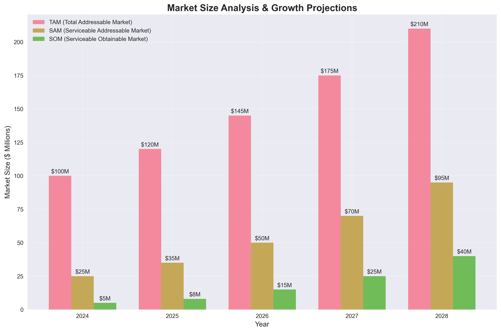
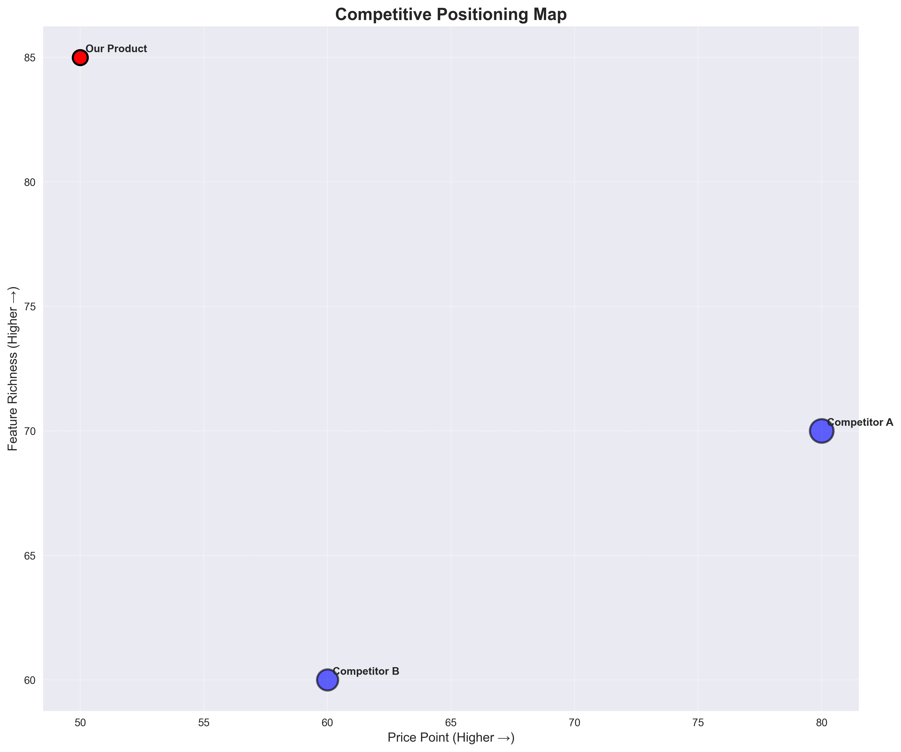
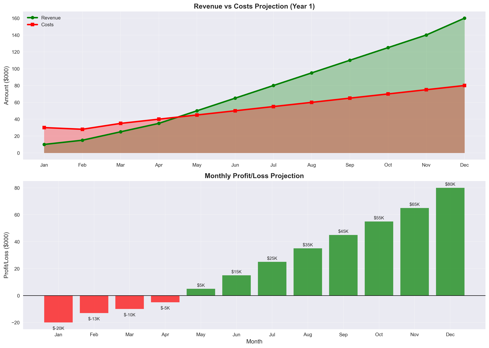
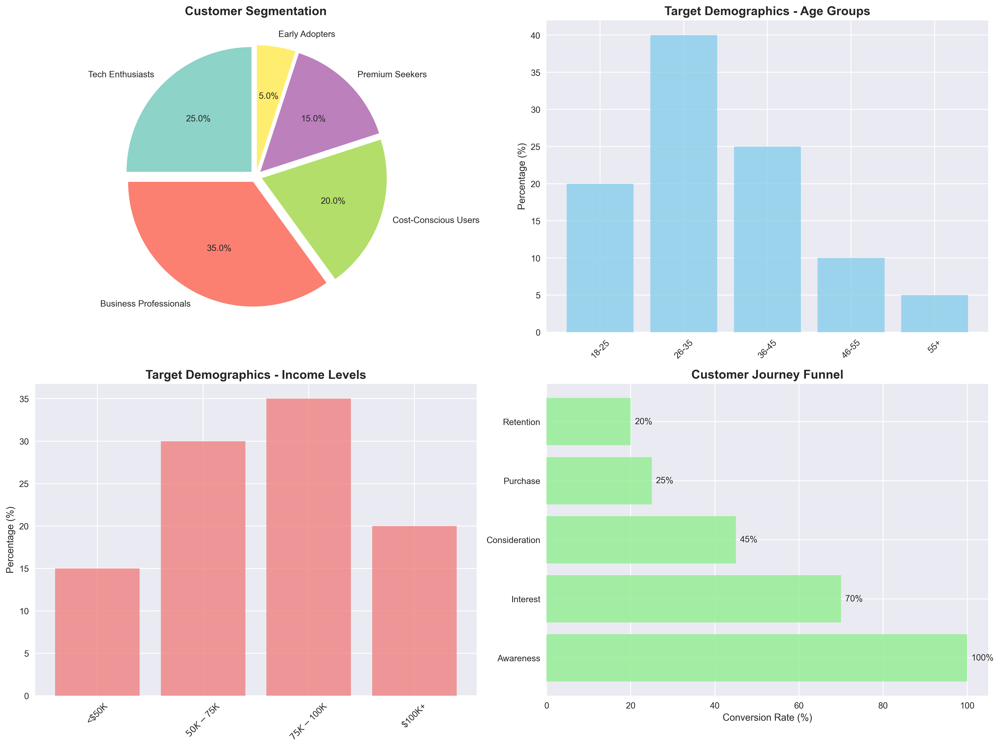
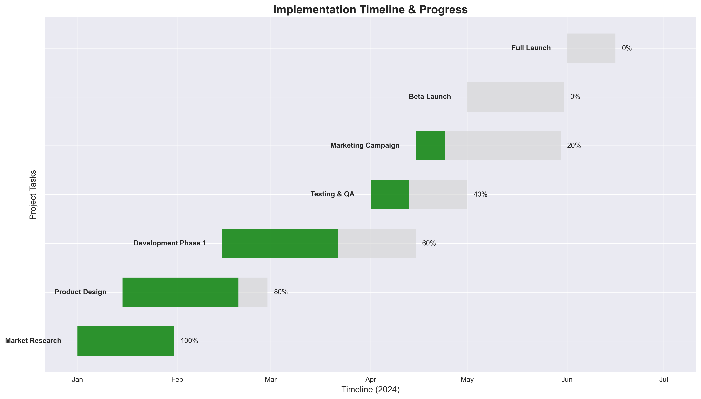
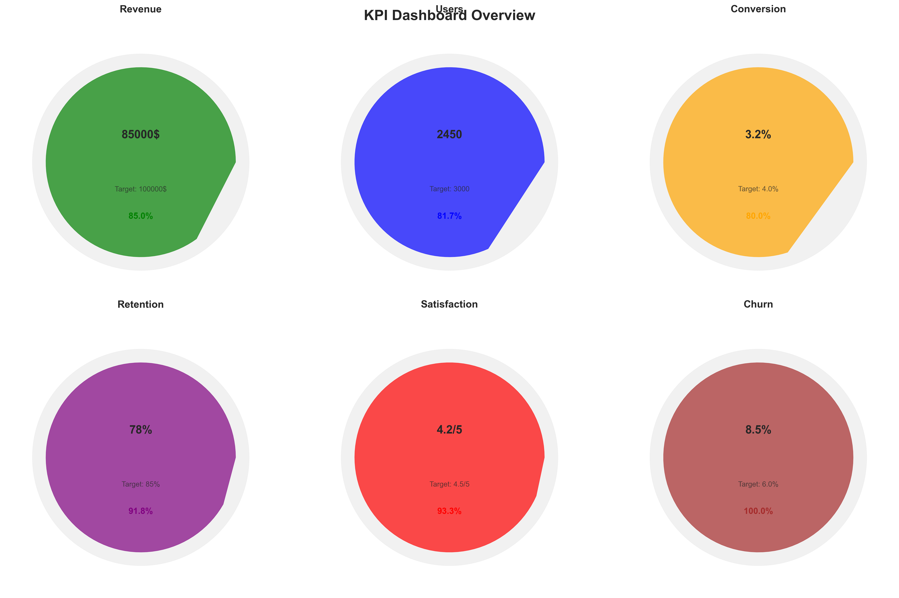

📊 Comprehensive Product Analysis
**Executive Insights Architect Strategic Report: AquaSmart Smart Hydration Bottle**
**1. Executive Summary**
This report synthesizes market research, competitive analysis, financial projections, technical feasibility assessments, and customer segmentation to provide a comprehensive strategic plan for launching AquaSmart, a smart hydration bottle. Market research indicates a significant Total Addressable Market (TAM) with strong growth potential, driven by increasing health consciousness and the adoption of wearable technology. However, the market is competitive, with established players offering similar solutions. AquaSmart's unique value proposition lies in its accurate, automatic tracking, personalized hydration plans, engaging gamification, and comprehensive data insights. Financial projections suggest strong profitability within three years, contingent on successful customer acquisition and retention. Technical feasibility is high, though careful consideration of scalability and security is required. The recommended go-to-market strategy emphasizes a multi-channel approach, leveraging digital marketing, strategic partnerships, and targeted content marketing to reach key customer segments.
**2. Key Findings**
* **Market Opportunity:** A substantial TAM exists for smart hydration bottles, with significant growth potential. However, competition is present.
* **Competitive Advantage:** AquaSmart offers superior accuracy, personalization, and engagement compared to existing solutions.
* **Financial Viability:** Projected financials demonstrate strong revenue growth and profitability within three years, depending upon successful customer acquisition.
* **Technical Feasibility:** The product is technically achievable, but careful planning and execution are vital for scalability and security.
* **Customer Segmentation:** Four key customer segments have been identified (Budget-Conscious Shoppers, Premium Users, Tech-Savvy Explorers, Loyalists), each requiring a tailored marketing approach.
**3. Strategic Recommendations**
* **Product Development:** Prioritize development of core features (accurate tracking, personalized goals, smart reminders, data visualization) before expanding into integrations with other health apps.
* **Go-to-Market Strategy:** Implement a multi-channel marketing strategy emphasizing digital marketing (SEO/SEM, social media advertising, influencer marketing), strategic partnerships (fitness centers, health apps), and targeted content marketing tailored to each customer segment.
* **Pricing Strategy:** Adopt a tiered pricing model to cater to different customer segments (Basic, Premium, Enterprise). Utilize value-based pricing to highlight the value proposition.
* **Customer Acquisition:** Focus on cost-effective customer acquisition strategies, leveraging organic reach and strategic partnerships alongside paid advertising.
* **Customer Retention:** Implement a robust customer onboarding program, provide exceptional customer support, and foster a strong brand community.
* **Technology Stack:** Utilize the recommended technology stack (React.js, Node.js, PostgreSQL, AWS) to ensure scalability, security, and performance.
* **Financial Management:** Secure initial funding, monitor key financial metrics (MRR, CAC, CLTV), and adapt the financial model as needed.
**4. Implementation Roadmap**
**Phase 1 (Months 1-3):** Product development (MVP), secure seed funding, develop marketing materials, build website and CRM system.
**Phase 2 (Months 4-6):** Beta testing, finalize pricing strategy, launch pre-order campaign, initiate PR and influencer outreach.
**Phase 3 (Months 7-9):** Official product launch, initiate marketing campaigns (paid and organic), monitor key metrics, adjust strategies as needed.
**Phase 4 (Months 10-12):** Expand marketing reach, explore strategic partnerships, analyze customer feedback, iterate on product features.
**Phase 5 (Months 13-18):** Scale operations, explore international markets, develop new product features, consider Series A funding.
**5. Risk Assessment and Mitigation**
| Risk | Probability | Impact | Mitigation Strategy |
|--------------------------|-------------|--------------|------------------------------------------------------------------------------------|
| Intense competition | High | High | Differentiate through superior features, strong branding, and targeted marketing. |
| Technological challenges | Medium | Medium | Employ robust testing, prioritize core features, and secure experienced developers. |
| Customer acquisition cost | Medium | Medium | Utilize cost-effective marketing strategies, focus on high-value customer segments. |
| Regulatory hurdles | Low | Medium | Proactively monitor and comply with relevant regulations. |
| Manufacturing delays | Low | High | Secure multiple suppliers, establish strong supplier relationships. |
**6. Critical Success Factors**
* **Successful Product Development:** Delivering a high-quality product that meets customer expectations is paramount.
* **Effective Marketing and Sales:** Reaching the target audience with compelling messaging and driving conversions is crucial.
* **Strong Customer Relationships:** Building trust and loyalty through exceptional customer service and engagement is essential.
* **Scalable Technology Infrastructure:** Ensuring the system can handle increasing demand is vital for long-term growth.
* **Efficient Financial Management:** Securing sufficient funding and managing costs effectively are key to profitability.
**7. Prioritized Action Plan and Next Steps**
* **Within 1 week:** Finalize product specifications and initiate product development.
* **Within 2 weeks:** Secure seed funding.
* **Within 4 weeks:** Complete website development and CRM system setup.
* **Within 6 weeks:** Begin beta testing.
* **Within 8 weeks:** Finalize marketing materials and launch pre-order campaign.
* **Ongoing:** Monitor key metrics, adapt strategies as needed, and maintain continuous communication with stakeholders.
This report provides a comprehensive strategic framework for launching AquaSmart. Regular monitoring of KPIs and iterative adjustments to the strategy will be crucial to achieving success. Further detailed analysis may be required to refine specific aspects of the plan.
🔍 Visual Insights





